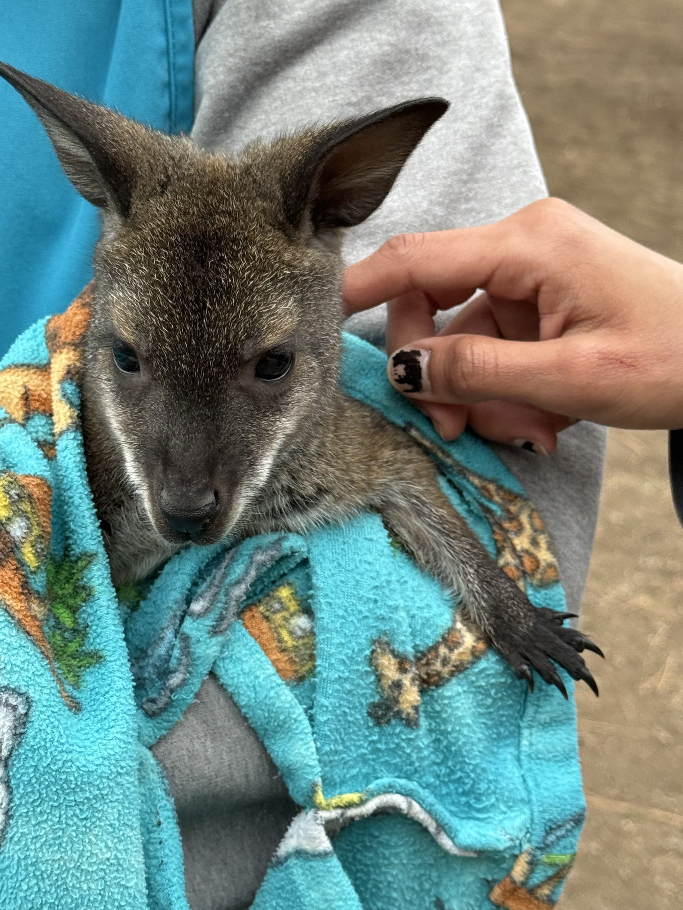
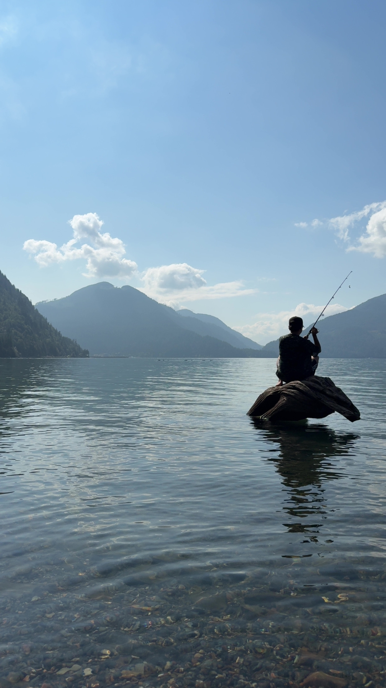

This a blog about some of my adventures and travels!
Hello, I'm Kirb! I love sharing my experiences with others.
Adventures I went on in Kelowna.
Me and my partner went to Kelowna to see a Lights perform with some friends

Rene posing with an emu. I thought it was really cool it looks like a dinosaur.

My friend Mika hanging out with a cappybara. These guys were super chill and have coarse fur.

A animal handler holding a baby kangaroo. We got to pet it and he was very soft.
Some of the cool different water bodies i've visited.

Gray fishing at Harrison Lake. The water was crystal clear and so peaceful.

The halfway river hot springs just outside of Nakusp. This place was so surreal. The walk down was so worth it.

Slocan Lake with mountains in the background. This was my favourite reststop on our camping trip to the Kootenays.